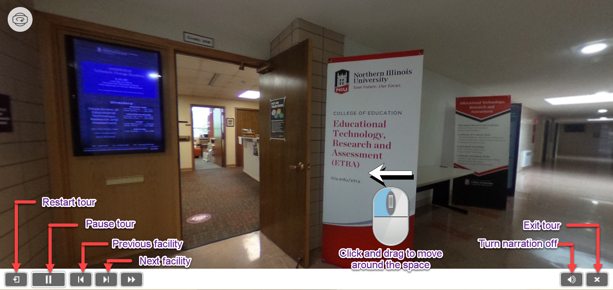
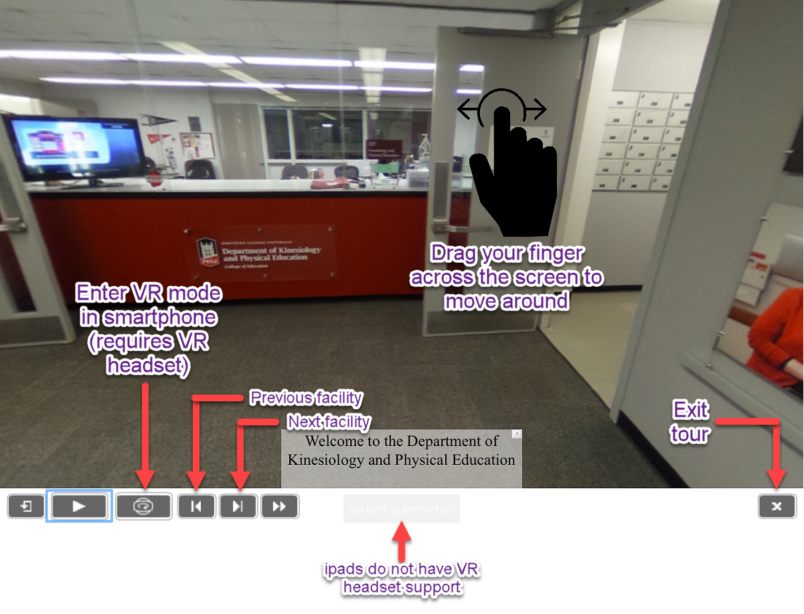

Guidelines
for VR Tours
Device
Compatibility
The tours are best viewed on a desktop or laptop computer or a virtual reality headset. Latest smartphones (running iOS 14 or Android 11) and tablets will also work with the tours.
How to Navigate the VR Tour on a Desktop/Laptop
- Left-click and drag your mouse on the scene to move around the image. On a mobile device, you can drag your finger across the screen.
- Clicking on arrows will help you navigate through the facilities of the department.
- The sound icon enables/disables narration.
- To exit the tour, click the "✖" icon.

How to Navigate the VR Tour on Mobile Devices
- Drag your finger across the screen to move around the image.
- Clicking on arrows will help you navigate through the facilities of the department.
- If you have a VR headset, you can click on the VR mode icon to start watching the tour in virtual reality.
- To exit the tour, click the "✖" icon.

Frequently Asked Questions
- Q: The tour restarts automatically on my phone. What should I do?
- A: Smartphone browsers might not be able to process the large image and audio for the tour. Hence the restart. That is why we recommend you to view the tour on a desktop/laptop.
- Q: It shows "VR not supported" on my iPad. Why is that?
- A: iPads do no support VR headsets. Still you can browse the tour on your device.